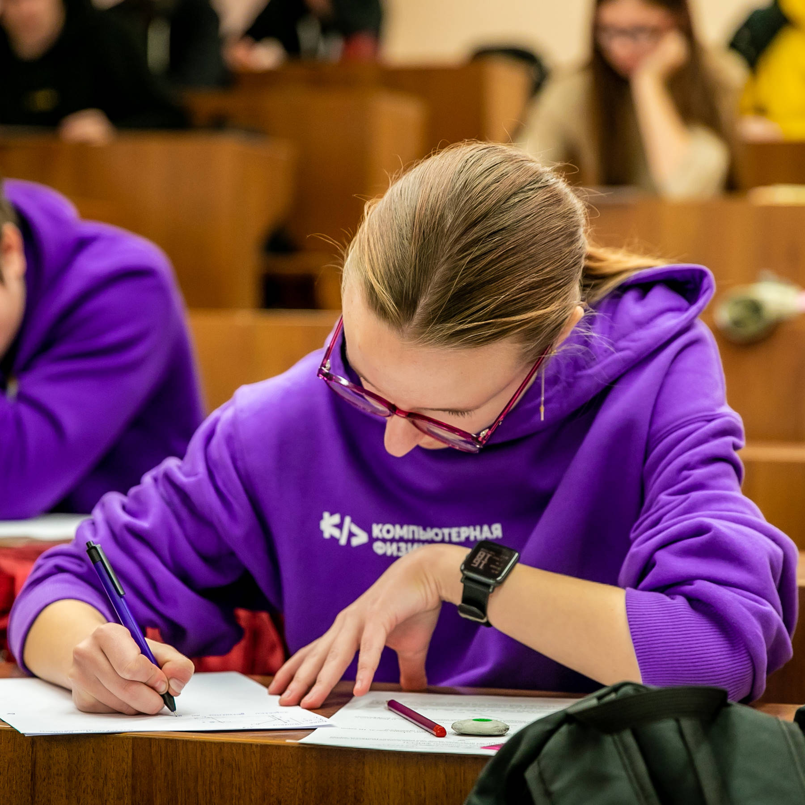

Полоцкий государственный университет ИМЕНИ ЕВФРОСИНИИ ПОЛОЦКОЙ проводит множество мероприятий, направленных на повышение качества образования и привлечение талантливых студентов. Одно из таких мероприятий - многопрофильная олимпиада по различным направлениям.
Одним из главных преимуществ участия в многопрофильной олимпиадеявляется возможность поступления в Полоцкий государственный университет без сдачи централизованного тестирования и экзаменов. Это значительно упрощает процесс поступления и дает возможность талантливым студентам получить высшее образование в престижном вузе.
КРОМЕ ПРОВЕДЕНИЕ МНОГОПРОФИЛЬНОЙ ОЛИМПИАДЫ В УНИВЕРСИТЕТЕ, НА БАЗЕ ФАКУЛЬТЕТА КОМПЬЮТЕРНЫХ НАУК И ЭЛЕКТРОНИКИ ЕЖЕГОДНО ПРОВОДЯТСЯ ОЛИМПИАДЫ КАК ДЛЯ ШКОЛЬНИКОВ ТАК И ДЛЯ СТУДЕНТОВ ПО ПРЕДМЕТАМ: ФИЗИКА, МАТЕМАТИКА, ПРОГРАММИРОВАНИЕ